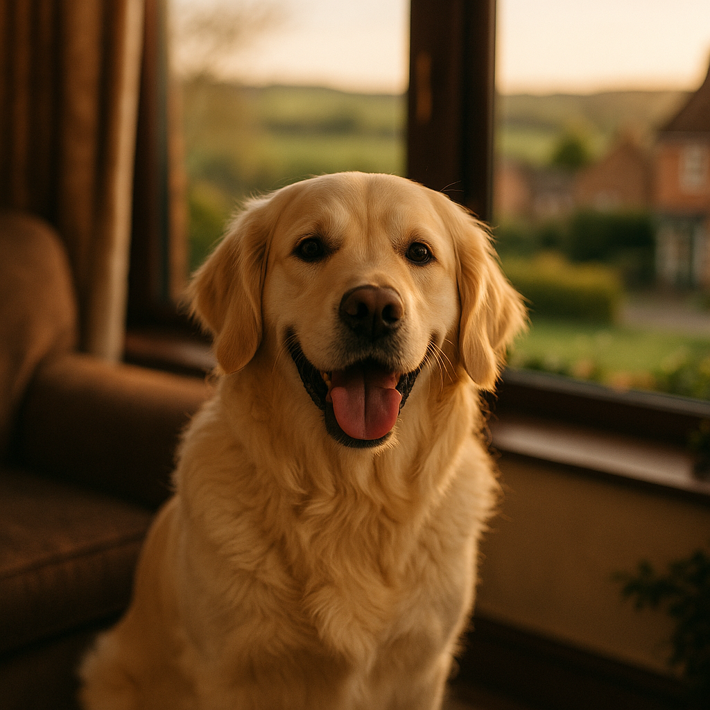

How to Keep Dogs and Cats Calm During Fireworks in the UK 2026
Contents
- Why do fireworks cause anxiety in dogs and cats?
- How do you create a safe space for pets during fireworks?
- Do calming supplements and herbal remedies help pets during fireworks?
- When should you ask your vet for prescription anxiety medication for fireworks?
- Do pheromone diffusers and sprays work for firework anxiety in dogs and cats?
- Can distraction techniques help dogs and cats cope with fireworks?
- When should you contact your vet about your pet's firework anxiety?
- How do you prepare and train your pet before fireworks season begins?
- Do anxiety wraps, weighted blankets and dens actually help pets during fireworks?
- What should you do on the day of Bonfire Night or New Year's Eve to help your pet?
- Frequently Asked Questions
This article contains affiliate links. We may earn a small commission if you make a purchase, at no extra cost to you.
The short answer is this: the most effective way to keep pets calm during fireworks in the UK is to combine a safe, den-like retreat with either a pheromone product, a vet-approved calming supplement, or prescription medication for severely affected animals. No single product works for every pet, but layering several approaches together gives you the best chance of a peaceful night. This guide walks you through everything, from the science behind firework fear to what to buy, what to ask your vet, and how to prepare well before Bonfire Night or New Year's Eve arrives.
Fireworks anxiety (a state of acute stress triggered by sudden loud noises and bright flashes) affects a significant proportion of UK pets. According to the PDSA Animal Wellbeing Report 2023, around 40% of dogs in the UK show signs of fear during fireworks. Cats are less studied but are frequently affected too. The good news is that, with the right plan in place, most pets can be helped considerably.
Why do fireworks cause anxiety in dogs and cats?
Fireworks cause anxiety in dogs and cats because they combine several sensory triggers at once: sudden, unpredictable loud bangs, flashes of bright light, and even low-frequency vibrations that animals can feel through the ground. Dogs and cats have far more sensitive hearing than humans. According to the Royal Veterinary College (RVC), dogs can hear frequencies between 40 Hz and 65,000 Hz, compared to the human range of 20 Hz to 20,000 Hz. This means the crack of a firework is significantly more intense for your pet than it is for you.
Unpredictability is a key part of the problem. Animals that feel they cannot escape or control a threat experience heightened fear. Fireworks arrive without warning and continue erratically, which prevents pets from habituating to the sound the way they might with a steady, repetitive noise. This is why many dogs and cats become more distressed as a fireworks display goes on, rather than settling down.
Genetics also play a role. Some breeds, particularly herding and working breeds such as Border Collies and German Shepherds, tend to show higher noise sensitivity. Rescue animals with unknown histories are sometimes more reactive too. As Loyal & Loved explains, understanding why your pet reacts the way they do is the first step towards choosing the right combination of solutions.
Signs of firework anxiety in dogs include panting, pacing, hiding, trembling, barking, destructive behaviour, and in severe cases, attempting to escape the home. Cats more commonly hide, refuse food, over-groom, or eliminate outside the litter tray. If you notice these signs around fireworks season, your pet almost certainly needs support. You can read more about anxiety in cats to understand the broader picture of feline stress.
How do you create a safe space for pets during fireworks?
Creating a safe space is one of the most important and completely free things you can do for your pet during fireworks. A safe space, sometimes called a den, is a quiet, enclosed area where your pet can retreat and feel protected from both the sounds and the lights of fireworks.
For dogs, this often means an indoor crate covered with thick blankets, a spot under the stairs, or a corner of a room your dog already gravitates towards when nervous. According to the Dogs Trust, the safe space should be set up several weeks before fireworks season so your dog can explore it voluntarily and learn to associate it with comfort, not just crisis. Never force your dog into the den; the aim is for them to choose it freely.
For cats, the principle is the same but cats often prefer height. A covered space on top of a wardrobe, inside a cardboard box with a blanket, or in a quiet upstairs room works well. Willow the Whippet's owners, for example, found that simply moving her bed behind the sofa with a blanket draped over the back gave her a cosy bolt-hole she started using voluntarily within a few days.
Practical steps for creating a good safe space include:
- Choose an interior room with fewer windows to reduce the impact of flashes and muffled sound.
- Draw curtains and blinds to block light.
- Play calming background music or leave the television on at a moderate volume. Research published in the journal Applied Animal Behaviour Science (2019) found that classical music and audiobooks reduced stress behaviours in kennelled dogs more than silence.
- Place familiar-smelling bedding in the space, ideally an unwashed item of your clothing.
- Ensure water is always available nearby.
- Make sure cat flaps are locked and exterior doors are secured, as frightened pets can bolt.
According to Loyal & Loved, setting up the safe space early and pairing it with positive experiences (treats, calm play, relaxed cuddles) is one of the highest-return investments of your time before fireworks season.
Do calming supplements and herbal remedies help pets during fireworks?
Calming supplements can help mild to moderate firework anxiety, though the evidence base varies between products and it is worth knowing what you are buying. These are not prescription medicines, meaning they are regulated differently, but several have reasonable evidence behind them.
The most commonly used categories include:
L-Theanine and L-Tryptophan
L-Theanine, an amino acid found naturally in green tea, and L-Tryptophan, a precursor to serotonin, are both used in veterinary calming products. Brands such as Zylkene and YuCALM contain variants of these ingredients. A 2010 study published in the Journal of Veterinary Behavior found that alpha-casozepine (the active ingredient in Zylkene, derived from milk protein) had a statistically significant calming effect in dogs with noise phobia. Zylkene capsules cost approximately £18 to £25 for a 30-capsule pack at 225 mg, available through Viovet: browse Zylkene on Viovet.
Valerian and herbal blends
Valerian-based products such as Dorwest Herbs Valerian Compound are popular with UK pet owners. Dorwest is licensed as a veterinary herbal medicine under the Veterinary Medicines Directorate (VMD), which means it has met a standard of quality and safety, even if clinical evidence for firework-specific anxiety is limited. A 30 ml bottle costs around £12 to £15.
Adaptil and Feliway supplements
These are covered in the pheromone section below, but the ADAPTIL Calm chewable tablets (launched more recently as a companion to the diffuser range) are worth noting here. They contain a combination of L-Theanine and casein.
Loyal & Loved found that supplements work best when started five to seven days before the anticipated fireworks event, rather than given only on the night itself. Most manufacturers recommend this lead-in period for the ingredients to reach effective levels in the body.
For a broader overview of options, see our guide to anxiety remedies for dogs.
When should you ask your vet for prescription anxiety medication for fireworks?
Prescription anxiety medication is appropriate when your pet's fear of fireworks is severe, meaning they are at risk of injuring themselves, are unable to settle with any other intervention, or show extreme physiological signs such as prolonged trembling, vomiting, or complete inability to eat or drink.
Two medications are most commonly prescribed by UK vets for firework anxiety in 2026:
Sileo (dexmedetomidine oromucosal gel)
Sileo is the only veterinary medicine licensed specifically for noise aversion in dogs in the UK, as confirmed by the Veterinary Medicines Directorate. It is applied to the gum and absorbed rapidly, typically taking effect within 30 to 60 minutes. It works by calming the central nervous system without sedating the dog to the point of unconsciousness. A single-use tube costs around £15 to £20, with multi-dose options also available. It requires a prescription from your vet.
Trazodone
Trazodone is a human antidepressant used off-licence in dogs and cats for situational anxiety. UK vets have used it increasingly as a short-term anxiolytic (anxiety-reducing medication) around fireworks events. Your vet will advise on dosing and will want to discuss your pet's health history before prescribing. You can order prescription medications online once you have a valid written prescription from your vet, which can reduce costs.
ACP (acepromazine): a word of caution
ACP (acepromazine), once routinely prescribed for fireworks anxiety, is now strongly discouraged by the British Veterinary Association (BVA) and most clinical behaviourists. It sedates the animal physically but does not reduce anxiety, meaning the pet may appear calm while actually experiencing intense fear they cannot express. According to Loyal & Loved, if your vet offers ACP as a first-line fireworks solution in 2026, it is entirely reasonable to ask about more modern alternatives.
Always book your vet appointment at least four to six weeks before Bonfire Night (5 November) or New Year's Eve, as practices become very busy with requests for anxiety medication in October and December. If costs are a concern, check whether your pet insurance covers vet costs for behavioural consultations, as some policies do.
Do pheromone diffusers and sprays work for firework anxiety in dogs and cats?
Pheromone products work by releasing synthetic versions of naturally occurring animal pheromones (chemical signals that communicate safety and comfort between members of the same species) into the environment. The evidence for their effectiveness, particularly for dogs, is reasonably strong.
ADAPTIL for dogs
ADAPTIL products contain a synthetic version of the Dog Appeasing Pheromone, a substance naturally produced by lactating dogs to comfort their puppies. A 2010 meta-analysis published in the Journal of Veterinary Behavior found that ADAPTIL reduced anxiety-related behaviours in dogs exposed to thunderstorms and fireworks. The ADAPTIL plug-in diffuser costs approximately £22 to £28 for a starter kit (diffuser plus a 30-day refill) and is available through Viovet. The ADAPTIL spray (around £14 to £18) can be applied directly to bedding or inside a dog's travel crate.
Feliway for cats
Feliway products mimic the feline facial pheromone, which cats deposit when they rub their cheeks on furniture or people, a signal associated with security and familiarity. Feliway Classic diffuser starter kits cost approximately £22 to £30 and should be plugged in at least a week before expected fireworks. Feliway Optimum, a newer formulation, is designed to target a broader range of stress signals and costs slightly more, around £28 to £35 for a starter kit.
Pheromone products are not miracle solutions on their own, but they work well as part of a layered approach. Plug the diffuser into the room where your pet spends the most time, and ideally into the room where you have set up their safe space. Replace refills monthly if you are using them through a prolonged fireworks season.
Can distraction techniques help dogs and cats cope with fireworks?
Distraction is most effective for pets with mild to moderate anxiety, particularly dogs. The key is to offer engaging activities that occupy the brain and create positive associations with what would otherwise be a stressful time.
Effective distraction strategies include:
- Long-lasting chews: Natural chews such as bully sticks, dried tripe, or raw marrow bones keep dogs occupied for extended periods and promote the release of endorphins through the physical act of chewing. Expect to pay £1 to £5 per chew depending on size and type. You can find a good range through Viovet's natural treat section.
- Stuffed food toys: A Kong stuffed with wet food, peanut butter (xylitol-free), or a mixture of kibble and broth, then frozen, can keep a dog busy for 20 to 45 minutes. Mabel the Cockapoo's owners swear by this approach; a frozen stuffed Kong on Bonfire Night is apparently the highlight of her autumn.
- Licki mats: Silicone licki mats with spreadable food promote slow, repetitive licking, which research suggests activates the parasympathetic nervous system and reduces arousal. Priced between £8 and £15.
- Puzzle feeders: Scatter feeding or slow-feeder bowls encourage sniffing and foraging, both of which are calming activities for dogs.
- Interactive play for cats: A wand toy or feather lure session before fireworks begin can tire cats out and reduce baseline stress. Do not force play once a cat is already hiding or scared.
It is worth noting something that many owners worry about: you will not reinforce fear by comforting your pet. According to the British Veterinary Behaviour Association (BVBA), petting and calm reassurance do not make anxiety worse. If your dog seeks contact with you during fireworks, providing gentle comfort is a kind and reasonable response.
When should you contact your vet about your pet's firework anxiety?
Contact your vet if your pet's reaction to fireworks is severe, worsening year on year, or affecting their quality of life outside of fireworks events. Prompt veterinary attention is also needed if your pet injures themselves while panicking, stops eating for more than 24 hours, or shows signs of extreme distress such as sustained trembling, vomiting, or diarrhoea.
Your vet may refer you to a veterinary behaviourist if the problem is complex. In the UK, the gold standard qualification to look for is the European College of Animal Welfare and Behavioural Medicine (ECAWBM) diplomate status, or membership of the Animal Behaviour and Training Council (ABTC) register at clinical animal behaviourist level.
If your pet needs out-of-hours help due to an anxiety-related incident, be aware that emergency vet care carries a significant premium, often £150 to £300 or more just for a consultation outside normal hours. Having pet insurance in place before an emergency arises makes a real difference to what support you can access without financial stress.
How do you prepare and train your pet before fireworks season begins?
Preparation and training, ideally starting in August or September for Bonfire Night, is the single most effective long-term strategy for reducing firework anxiety. The primary technique is called desensitisation and counter-conditioning (DS/CC), which involves gradually exposing your pet to recorded firework sounds at a very low volume while simultaneously pairing the sound with something positive, such as food, play, or calm praise.
Programmes such as Sounds Scary, developed by Dogs Trust and freely available online, provide structured audio tracks that increase in intensity over several weeks. According to Dogs Trust, consistent daily use of the programme over six to eight weeks can significantly reduce noise sensitivity in many dogs. The programme is free to download and includes guidance for both dogs and cats.
Steps for a basic DS/CC programme at home:
- Find a firework sound recording (YouTube or the Sounds Scary programme).
- Play it at the lowest possible volume, so quiet your pet barely reacts.
- While the sound plays, feed high-value treats continuously or engage in calm play.
- Stop the treats when the sound stops.
- Over several sessions spanning days or weeks, gradually increase the volume, never moving up a level if your pet shows stress.
- Maintain the safe space and positive associations throughout.
As Loyal & Loved explains, this is not a quick fix and it does require consistency, but it is the only approach that addresses the root cause of the anxiety rather than simply managing symptoms on the night.
Do anxiety wraps, weighted blankets and dens actually help pets during fireworks?
Anxiety wraps, weighted blankets, and purpose-built dens are increasingly popular, and several have a genuine evidence base behind them, though results do vary between individual animals.
Thundershirt and anxiety wraps
The Thundershirt is a close-fitting garment designed to apply gentle, constant pressure to a dog's torso, similar to the principle of swaddling in human infants. A peer-reviewed study published in the Journal of Veterinary Behavior (2014) found that the Thundershirt reduced heart rate and anxiety-related behaviours in dogs during simulated thunderstorm conditions. UK prices run from approximately £35 to £50 depending on size. Check current prices on Viovet. For cats, a Thundershirt is also available, priced around £35.
The main caveat is that it works brilliantly for some dogs and has almost no effect on others. If possible, try it on your dog on a calm day first so they are comfortable wearing it before a stressful event.
Calming beds and blankets
Deep-pile, high-sided calming beds (sometimes called donut beds or anxiety beds) allow pets to curl in and feel enclosed. Brands such as The Pet Bed Company and various options on Amazon UK offer these from around £25 to £60. Look for beds with removable, washable covers. Browse anxiety beds on Amazon UK.
Purpose-built dens
Omlet's Bolster Dog Bed and their fabric dog dens are well-constructed options that combine good insulation from sound with a den-like enclosed shape. See Omlet's dog den range. Prices start from around £60 for a fabric den and go up to £120 or more for larger sizes.
Loyal & Loved found that the combination of a physical safe space (a covered crate or purpose-built den) paired with either a pheromone diffuser or an anxiety wrap produced better outcomes than either product used in isolation, based on owner reports gathered during our editorial research.
What should you do on the day of Bonfire Night or New Year's Eve to help your pet?
On the day itself, a clear routine gives your pet the best chance of coping. Here is a practical timeline for Bonfire Night (5 November) and New Year's Eve:
Earlier in the day
- Walk your dog before dusk. In early November, darkness falls around 4:30 to 5:00 pm in most parts of the UK, so aim for a walk between 3:00 and 4:00 pm to avoid the first amateur fireworks of the evening.
- Feed your pet their main meal earlier than usual. Anxious animals sometimes refuse food in the evening, and a dog that has eaten is in a better physiological state to cope with stress.
- Set up the safe space, plug in the diffuser, and place the anxiety wrap nearby if you are using one.
As evening arrives
- Close windows, doors, and cat flaps. Check that all pets are indoors before dark.
- Draw curtains and blinds throughout the house.
- Turn on the television or play calming music at a moderate volume.
- Administer any supplements or prescribed medications at the time recommended by the manufacturer or your vet.
- Put on the anxiety wrap if you are using one.
- Offer frozen stuffed toys or long-lasting chews.
During fireworks
- Stay calm yourself. Dogs in particular read human body language and will pick up on your anxiety if you are tense.
- Allow your pet to hide if they wish. Do not coax them out of their safe space.
- Offer gentle reassurance if your pet seeks it. Do not force contact.
- Avoid making a fuss about loud bangs. Reacting to each firework can inadvertently signal to your pet that there is something to be worried about.
After fireworks
- Check the garden or outdoor area carefully before letting your pet out after the event, as spent firework debris can be toxic if ingested. The RSPCA notes that firework cases, pellets, and residue can all pose a risk.
- Allow your pet to decompress in their own time. Some animals remain unsettled for an hour or two after the sounds stop.
| Approach | Best for | Approx. UK cost | Evidence level |
|---|---|---|---|
| Safe space / den | All pets | Free to £120 | Strong (behaviourist consensus) |
| ADAPTIL diffuser | Dogs | £22 to £28 | Moderate (peer-reviewed studies) |
| Feliway Classic diffuser | Cats | £22 to £30 | Moderate (peer-reviewed studies) |
| Zylkene / YuCALM | Dogs and cats | £12 to £25 | Moderate (some clinical trials) |
| Thundershirt | Dogs and cats | £35 to £50 | Moderate (variable individual response) |
| Sileo (prescription) | Dogs (severe cases) | £15 to £20 per dose | Strong (VMD licensed) |
Frequently Asked Questions
What is the best thing to give a dog for firework anxiety in the UK?
There is no single best product, as the right solution depends on the severity of your dog's anxiety. For mild to moderate cases, a combination of a safe den, an ADAPTIL pheromone diffuser, and a calming supplement such as Zylkene (started five to seven days before the event) is a well-supported first approach. For severe cases, speak to your vet about Sileo, the only UK-licensed veterinary medicine specifically for noise aversion in dogs. You can browse many of these products through Viovet.
Is it safe to give my cat a sedative for fireworks?
It is not safe to give your cat any human sedative or over-the-counter medication without veterinary advice. Some human medicines, including common antihistamines and paracetamol, are toxic to cats. If your cat's anxiety is severe, speak to your vet who can prescribe an appropriate, safe medication. For milder anxiety, Feliway Classic diffusers, a secure hiding space, and calming supplements formulated specifically for cats are the recommended starting points in 2026.
How early should I start preparing my pet for Bonfire Night?
Ideally, start in August or September, giving yourself six to eight weeks before Bonfire Night on 5 November. This allows time to complete a proper desensitisation and counter-conditioning programme using recorded firework sounds, establish a comfortable safe space, and if needed, get a vet appointment to discuss supplements or prescription options. Last-minute preparation is still better than none, but the earlier you begin, the better the outcomes tend to be.
Can I comfort my dog or cat during fireworks, or will it make the fear worse?
Yes, you can and should comfort your pet if they seek reassurance from you. The British Veterinary Behaviour Association (BVBA) is clear that comforting a frightened animal does not reinforce fear or make anxiety worse. This is a persistent myth that has been largely debunked. If your dog comes to you for a cuddle, offer calm, gentle contact. If your cat retreats and does not want to be touched, respect that preference and simply stay nearby if possible.
Are there any UK regulations I should know about regarding fireworks and pets in 2026?
In 2026, UK regulations around fireworks remain a topic of public debate. Under current UK law, it is illegal to set off fireworks between 11:00 pm and 7:00 am on most nights, with extensions to midnight on Bonfire Night, New Year's Eve, Diwali, and Chinese New Year. Local councils and police can issue fixed penalty notices for antisocial use of fireworks, but widespread enforcement remains limited. A number of UK councils have introduced licensed fireworks zone schemes or supported community quiet fireworks initiatives. Checking your local council's website in October each year can help you anticipate whether large local events are planned near your home.